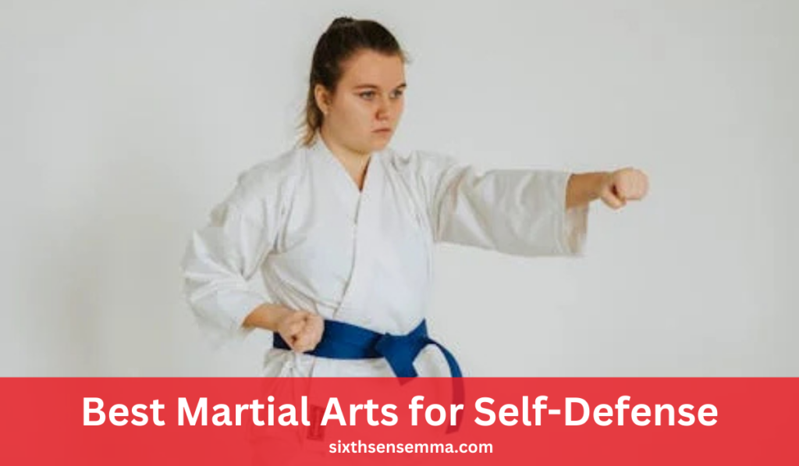
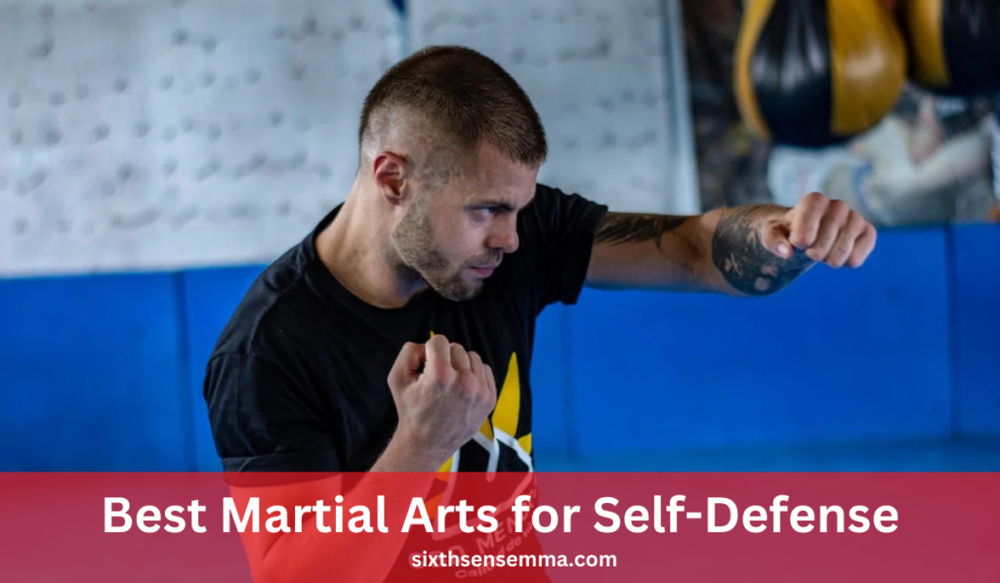
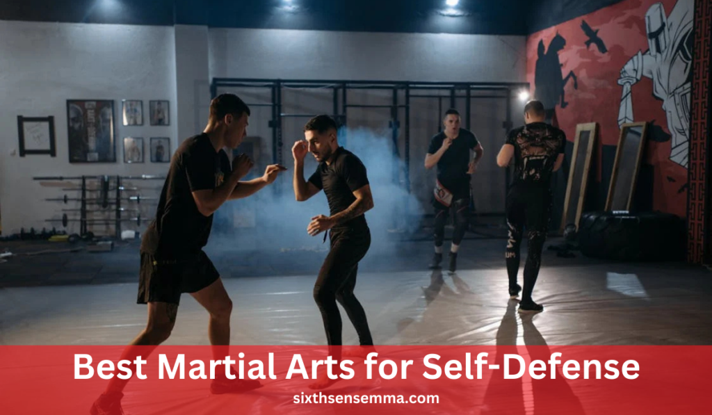

Best Martial Arts for Self-Defense: Top Disciplines Ranked

Introduction
Best martial arts for self-defense provide individuals with essential skills to enhance personal protection in today’s unpredictable world. Learning effective self-defense techniques boosts confidence and preparedness in real-life situations. This article ranks the top martial arts disciplines based on effectiveness, accessibility, and learning curve.
Which martial art is best for self-defense in real-life situations?
The Best Martial Arts for Self-Defense include Krav Maga for real-world combat scenarios, Brazilian Jiu-Jitsu for ground defense, and Muay Thai for powerful striking.
Key Points
Overview of Various Martial Arts Disciplines
Martial arts have been practiced for centuries, each discipline developed with distinct philosophies, techniques, and training methods. While some styles focus on striking, others emphasize grappling, submissions, or a mix of both.
Evaluation Criteria: Effectiveness, Accessibility, Learning Curve
There are three major factors that come into play when ranking martial arts in terms of self-defense.
Effectiveness: The ability, in real-life situations of self-defense, to neutralize threat levels. Martial arts like Krav Maga and Brazilian Jiu-Jitsu emphasize techniques tested in real combat scenarios with an emphasis on providing practitioners with the ability to protect themselves against larger or stronger attackers.
Access: Availability of self-defense classes, instructors, and training facilities. Popular martial arts such as Karate, Taekwondo, and Boxing are globally popular, so it is easier for a beginner to locate programs and self-defense instructors.
| Martial Art | Effectiveness | Accessibility | Learning Curve |
|---|---|---|---|
| Krav Maga | ⭐⭐⭐⭐⭐ | ⭐⭐⭐ | ⭐⭐⭐⭐ |
| Muay Thai | ⭐⭐⭐⭐ | ⭐⭐⭐⭐ | ⭐⭐⭐⭐ |
| Brazilian Jiu-Jitsu | ⭐⭐⭐⭐ | ⭐⭐⭐⭐ | ⭐⭐⭐ |
| Boxing | ⭐⭐⭐⭐ | ⭐⭐⭐⭐⭐ | ⭐⭐⭐⭐ |
| Judo | ⭐⭐⭐ | ⭐⭐⭐⭐ | ⭐⭐⭐ |
| Karate | ⭐⭐⭐ | ⭐⭐⭐⭐⭐ | ⭐⭐⭐ |
| Taekwondo | ⭐⭐⭐ | ⭐⭐⭐⭐⭐ | ⭐⭐⭐ |
| Hapkido | ⭐⭐⭐ | ⭐⭐⭐ | ⭐⭐⭐ |
| Wing Chun | ⭐⭐⭐ | ⭐⭐⭐ | ⭐⭐⭐ |
| Jeet Kune Do | ⭐⭐⭐⭐ | ⭐⭐ | ⭐⭐⭐ |
Unique Self-Defense Features of Each Martial Art
Every martial art has unique techniques and strategies that make it suitable for self-defense.
Brazilian Jiu-Jitsu: Specializes in ground fighting and submission techniques allowing a smaller opponent to control a stronger opponent. Fight control and leverage supersede brute strength.
Boxing: Develops swift and powerful punches, footwork and head movement that makes it one of the most effective striking techniques in self-defense. They learn to quickly evade attacks and counter effectively.
Karate: On the other hand, is the one that incorporates lots of practice in powerful strikes and blocking techniques combined with disciplined movement. Some styles include practical self-defensive moves, such as joint locks and pressure-point strikes.
By understanding these unique features, individuals can select the Best Martial Arts for Self-Defense based on their personal needs, physical capabilities, and training availability.
Main Content
Muay Thai
Muay Thai, often known as the “Art of Eight Limbs,” is a Thai martial art that uses fists, elbows, knees, and shins in addition to hitting for a well-rounded and highly effective combat system.
Techniques
Muay Thai is built around utilizing eight contact points (two fists, two elbows, two knees, and two shins), which allows practitioners to deliver powerful strikes from all angles. Here are some key techniques.
Striking Combinations: Muay Thai is famous for its aggressive, yet controlled, striking combinations. These combinations often involve mixing punches, elbows, knees, and kicks to overwhelm an opponent.
Elbows & Knees: Elbows and knees are unique to Muay Thai and are utilized in close-range combat. Elbow strikes can be devastating, especially when aimed at the head or face, and can cause serious injury.
Training Focus
Muay Thai training focuses on building the power, speed, and endurance required to perform its techniques effectively. There are several key aspects of training that are emphasized.
Conditioning Drills: Muay The requires high levels of physical conditioning, and practitioners engage in various drills to build strength, power, and cardiovascular endurance.
Pad Work: One of the hallmark training exercises in Muay Thai is pad work, where practitioners work with a partner or coach who holds pads to mimic the movements of an opponent. This helps improve timing, precision, and reaction speed.
Sparring Sessions: Sparring is a key component of Muay Thai training, providing an opportunity for practitioners to apply their techniques in live, real-time scenarios.
Boxing
Boxing is a martial art that primarily focuses on striking skills, honing the ability to deliver powerful punches while maintaining fluid movement and defensive techniques. It is a highly effective martial art for Best Martial Arts for Self-Defense, as it teaches individuals how to properly strike, move, and defend themselves in close-range confrontations.
Fundamental Skills
Boxing focuses on refining basic punching techniques and defensive maneuvers that are crucial for real-world Best Martial Arts for Self-Defense encounters. These skills are fundamental for both offensive and defensive strategies in boxing.
| Technique | Description |
|---|---|
| Jabs | The jab is a quick, straight punch that serves to control distance, set up combinations, and keep opponents at bay. It is one of the most versatile punches in boxing. |
| Crosses | A strong, straight punch thrown with the rear hand, typically after a jab. It is the most powerful punch in boxing, often used to deliver knockout blows. |
| Hooks | A powerful, swinging punch thrown in a circular motion, typically aimed at the head or body. Hooks are designed to land on the opponent’s side of the head or jaw. |
| Uppercuts | A punch delivered in an upward arc, typically aimed at the opponent’s chin or body. Uppercuts are effective in close-range fighting. |
| Head Movement | A defensive technique that involves slipping, ducking, and weaving to avoid punches. This is essential for evading incoming strikes. |
| Blocking Techniques | Using the arms, gloves, and shoulders to block or deflect punches. This is crucial for minimizing damage and maintaining defensive posture. |
Training Regimen
Boxing training emphasizes consistent practice of punching techniques, defensive movements, and real-world application through sparring. The goal is to develop power, speed, and timing while improving overall fitness and conditioning.

Brazilian Jiu-Jitsu (BJJ)
Brazilian Jiu-Jitsu (BJJ) is a martial art that primarily focuses on ground fighting and submission techniques, enabling individuals to defend against larger and stronger opponents by using leverage, technique, and strategy.
Key Techniques
In BJJ, techniques are designed to help a practitioner gain control over an opponent by using their body weight, positioning, and leverage rather than relying on pure strength.
Joint Locks and Chokeholds: One of the most fundamental aspects of BJJ is the use of joint locks and chokeholds to subdue an opponent. Joint locks, such as armbars, kimuras, and kneebars, involve isolating and hyper-extending the joints of an opponent, forcing them to submit due to the risk of injury.
Positional Control and Escapes: In addition to joint locks and chokeholds, Brazilian Jiu-Jitsu focuses on the concept of positional control. In BJJ, the idea is not just to submit the opponent, but also to maintain dominant positions that limit their ability to defend themselves or escape.
Krav Maga
Krav Maga, developed for the Israeli military, is widely regarded as one of the most practical and effective Best Martial Arts for Self-Defense systems available. The martial art emphasizes neutralizing threats quickly and efficiently by using a combination of instinctive movements, natural reflexes, and techniques from various martial arts.
Neutralizing Threats Quickly and Efficiently: The primary objective of Krav Maga is to neutralize an opponent’s threat without hesitation. This is achieved through aggressive and direct attacks aimed at vulnerable areas of the body, such as the eyes, throat, groin, and knees
Instinctive Movements and Natural Reflexes: Krav Maga teaches practitioners to use their natural instincts to defend themselves. This means that training focuses on movements that feel intuitive and are easily executed under stress.
Training Components
The training in Krav Maga revolves around preparing practitioners for real-life Best Martial Arts for Self-Defense situations, whether they involve armed or unarmed attackers.
Simulated Real-World Attack Scenarios: Krav Maga training often involves simulated attack scenarios that mimic real-world situations, such as being ambushed on the street, attacked in a parking lot, or confronted with an armed assailant.
Defense Against Armed and Unarmed Attackers: One of the defining features of Krav Maga is its emphasis on defending against both armed and unarmed attackers. In Krav Maga, individuals learn how to deal with various threats, including knives, guns, sticks, and blunt objects.
Training Methods
BJJ training involves a combination of live sparring, technique drills, and situational practice. The focus is on improving technique, timing, and adaptability to various combat scenarios.
Live Sparring (Rolling) to Practice Techniques: One of the most distinctive aspects of BJJ training is live sparring, known as “rolling.” During rolling, practitioners engage in controlled, real-time grappling with a partner, allowing them to test techniques, strategies, and positioning under pressure.
Drills to Improve Transitions and Positional Awareness: In addition to rolling, BJJ practitioners focus on drills that help improve transitions between positions and positional awareness. These drills, often conducted in a controlled environment with a partner, allow practitioners to practice escapes, sweeps, and submissions with precision
Judo
Judo, developed in Japan, is a martial art that focuses on throws, grappling, and submission techniques to subdue opponents. Unlike many striking martial arts, Judo emphasizes using an opponent’s force and movement against them.
Training Practices
Judo training is built around two main methods: Randori and Uchikomi. These practices are designed to refine technique, improve timing, and prepare practitioners for real-world situations.
| Training Component | Description |
|---|---|
| Randori (Free Practice) | Randori is a form of live sparring where practitioners apply their Judo techniques in dynamic, unpredictable situations. This free practice helps develop real-time responses, adaptability, and timing. |
| Uchikomi (Repetitive Drilling) | Uchikomi involves repetitive drilling of throws and techniques to build muscle memory and improve precision. Practicing throws in this manner allows for a more fluid application during randori or in self-defense encounters. |
Karate
Karate, a traditional Japanese martial art, is known for its powerful strikes, disciplined training, and emphasis on mental and physical development. It is one of the most recognized martial arts in the world and has proven to be effective for self-defense.

Taekwondo
Taekwondo, a Korean martial art, is renowned for its high, fast kicks and dynamic footwork. It is one of the most popular martial arts globally, known for its emphasis on agility, speed, and explosive power. Taekwondo practitioners are trained to use their legs as powerful weapons, delivering rapid, high kicks that can disable an attacker quickly.
Training Focus
Training in Taekwondo emphasizes flexibility, agility, and dynamic movement. Flexibility drills and footwork exercises are integral to ensuring that Taekwondo practitioners can execute their techniques with maximum speed and precision.
| Training Component | Description |
|---|---|
| Flexibility and Agility Drills | Taekwondo training focuses on increasing flexibility, which is crucial for executing high kicks. Agility drills help improve coordination, enabling practitioners to move swiftly and react quickly in a self-defense situation. |
| Poomsae (Patterns) | Poomsae are pre-arranged patterns of movements that simulate combat scenarios. These forms help students internalize self-defense techniques and improve their understanding of Taekwondo’s philosophy. |
| Sparring | Sparring in Taekwondo, or Gyeorugi, involves free combat where practitioners face off against each other. This training prepares students for unpredictable real-world situations, improving timing, reaction speed, and strategy. |
Jeet Kune Do
Jeet Kune Do (JKD) is a martial art developed by the legendary Bruce Lee, which emphasizes adaptability, directness, and efficiency in combat.
Training Aspects
Jeet Kune Do training is unique in that it incorporates a wide range of techniques from different martial arts systems. The emphasis is on learning what works Best Martial Arts for Self-Defense situations, rather than mastering a specific form.
| Training Component | Description |
|---|---|
| Incorporation of Techniques from Various Martial Arts | JKD practitioners draw from a variety of martial arts, such as boxing, Wing Chun, fencing, and wrestling. This allows for a versatile combat system that is highly adaptable to different threats. |
| Focus on Personal Expression | Jeet Kune Do encourages each practitioner to develop their own unique approach to combat based on their strengths, body type, and fighting style. This personal expression makes the martial art highly individualized and dynamic. |
Conclusion
Choosing the best martial art for self-defense involves personal considerations such as physical fitness, the availability of training resources, and individual preferences regarding combat style. Whether it’s the striking power of Muay Thai, the tactical approach of Krav Maga, or the ground control of Brazilian Jiu-Jitsu, each martial art offers a unique set of techniques and philosophies tailored to different self-defense needs.
FAQ's
The best martial art for beginners depends on personal goals and preferences. Brazilian Jiu-Jitsu (BJJ) is favored for its focus on technique, making it accessible for all. Karate is also a strong choice, emphasizing basic movements and self-discipline. It’s beneficial for beginners to try different classes to find what suits them best.
There is no age limit for starting martial arts! People of all ages can benefit from training. Many schools offer adult classes that cater to newcomers, allowing them to learn at their own pace and enjoy the physical and mental benefits of martial arts.
The cost of martial arts training varies by school, location, and class types. Many schools offer flexible pricing, including monthly memberships or per-class fees. It’s wise to explore different options to find a budget-friendly school that meets your needs.
Participation costs typically range from $100 to $150 per month for memberships, with per-class rates between $15 and $30. Annual memberships may be available for $800 to $1,200, often providing savings. Additionally, consider any extra fees for uniforms and equipment.
For your first day, wear comfortable athletic clothing. Most schools will provide a uniform (like a gi) for you to wear once you enroll, but you want to be ready to move in whatever you choose! Just check with the school beforehand to see if they have any specific requirements.
The time it takes to earn a belt varies widely based on the martial art and your dedication. Generally, it can range from 3 months to several years. Factors influencing this timeline include attendance, effort, and the specific belt progression system of the style you are learning.
Absolutely! Martial arts classes are intended for all fitness levels. Many schools offer beginner programs that help you gradually build your strength and flexibility, so don’t worry if you’re starting from scratch!
Train with us in Coppell
The first class is free. Shorts, a t-shirt and a water bottle. We lend the rest.
Book a free class